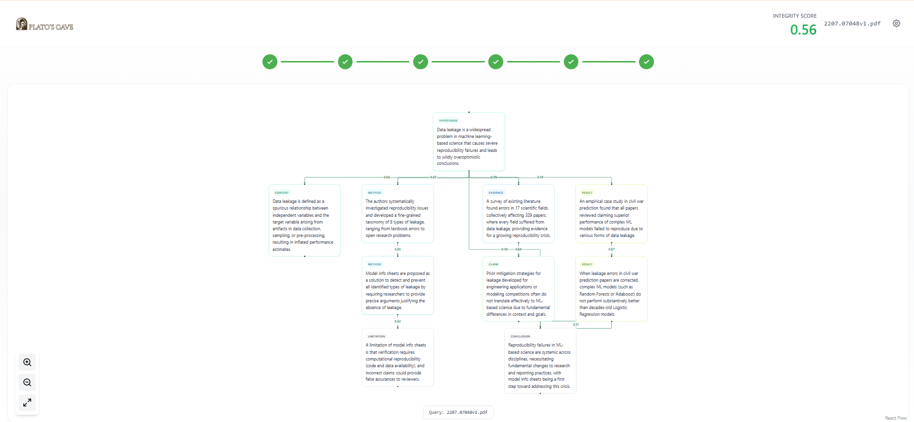

Accepted · AAAI-MAKE 2026

Plato’s Cave: a human-centered research verification system
Extracts directed acyclic claim graphs from papers and scores every node and edge for credibility. A trust-gating mechanism lets low trust in a parent claim exponentially attenuate confidence in everything that depends on it.
- Venue
- AAAI Spring Symposium, 2026
- Role
- Scoring algorithms and trust gating
- Eval
- 149 papers · 832 DAGs · 6,480 trials